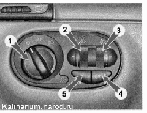
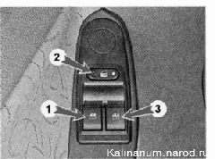

| 
Блок управления освещением:
1 - выключатель наружного освещения и подсветки приборов; 2 — регулятор яркости подсветки приборов; 3 - регулятор электрокорректора фар; 4 — выключатель задних противотуманных фонарей; 5 — заглушка (на части автомобилей выключатель противотуманных фар)

Блок переключателей на водительской двери: 1 — переключатель стеклоподъемника левой передней двери; 2 — переключатель центрального замка; 3 — переключатель стеклоподъемника правой передней двери |